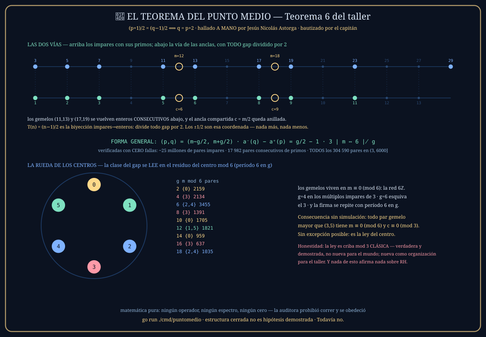

El cuento — dos hermanos y la puerta del medio
El capitán estaba haciendo cuentas con primos — a mano, en papel, sin computadora — y vio algo: si tomás el 11 y le sumás uno y lo partís al medio, te da 6. Si tomás el 13, le restás uno y lo partís al medio, te da 6 también. El mismo número. Probó con 17 y 19: da 9 y 9. Con 29 y 31: da 15 y 15. Siempre que dos primos están separados por 2 — los gemelos — comparten ese punto.
La imagen es la de dos hermanos parados en la vereda, uno en la casa 11 y otro en la casa 13: la puerta del medio, la 12, es de los dos. Y lo que el teorema termina diciendo es que esa puerta compartida no cae en cualquier lado: todas las puertas de gemelos del barrio están en esquinas múltiplo de 6. Sin excepción posible. El barrio de los primos tiene los centros ordenados en carriles, y el carril te dice qué clase de pareja vive ahí.
El enunciado
Para impares p < q. Y el valor compartido c es un entero, con p = 2c−1 y q = 2c+1: los dos primos son los dos vecinos impares del doble de c.
La demostración, en criollo
La igualdad (p+1)/2 = (q−1)/2 tiene un ½ de cada lado que molesta. Multiplicá todo por 2 y queda p + 1 = q − 1. Pasá el −1 para el otro lado: q = p + 2. Eso es todo el «⟹». Y el «⟸» es el mismo camino de vuelta: si q = p + 2, entonces q − 1 = p + 1, y dividiendo por 2 la igualdad aparece.
Porque p es impar: impar más uno es par, y par dividido dos es entero. Lo mismo con q − 1. Sin la imparidad, los «medios» quedarían con coma y el punto compartido no sería una puerta de verdad.
Fijate que en estos dos pasos no usamos que p y q sean primos — solo que son impares. La forma base del teorema es una identidad de los impares. Lo que los primos agregan viene después, y es la parte más linda: la ley del centro.
La forma general — las anclas
Cada impar p tiene dos anclas: los dos enteros que flanquean su mitad, a⁻(p) = (p−1)/2 y a⁺(p) = (p+1)/2. Con esa coordenada, el diccionario entero que el capitán dibujó en su lámina se vuelve UNA identidad:
| gap g | diferencia de anclas | lectura |
|---|---|---|
| 2 | 0 | ancla compartida — la igualdad del capitán |
| 4 | 1 | anclas adyacentes: se tocan sin superponerse |
| ≥ 6 | g/2 − 1 | hueco de exactamente (g−4)/2 enteros |
Y el papel exacto de los ±1/2, que la auditora pidió juzgar: la transformación T(n) = (n−1)/2 es la biyección estándar de los impares a los enteros, y divide todo gap por 2. Bajo esa lente los gemelos son exactamente los pares que se vuelven enteros consecutivos. Como aritmética, los ±1/2 son paridad; como coordenada, son el cambio de vía que compacta la pregunta de los gaps.
La ley del centro — lo que los primos agregan
Un primo mayor que 3 nunca es múltiplo de 3, así que en el reloj de 3 horas p marca 1 o 2. Si el gap no es múltiplo de 6, la media distancia r = g/2 tampoco es múltiplo de 3 — y entonces de las dos horas posibles de p, una queda prohibida porque mandaría a q a la hora 0 (sería múltiplo de 3, imposible para un primo). En la única hora que sobrevive, el centro m = p + r cae exactamente en la hora 0: múltiplo de 3. Y si el gap SÍ es múltiplo de 6, r marca hora 0 y el centro marca la misma hora que p — que nunca es 0. Se cierra solo. ∎
Consecuencia: los centros de cada clase de gap viven en carriles mod 6 separados, con firma periódica en g:
| g | 2 | 4 | 6 | 8 | 10 | 12 | 14 | 16 | 18 |
|---|---|---|---|---|---|---|---|---|---|
| m mod 6 | {0} | {3} | {2,4} | {3} | {0} | {1,5} | {0} | {3} | {2,4} |
Los gemelos viven en la red de los múltiplos de 6, y su ancla compartida c = m/2 es siempre múltiplo de 3. La clase del gap se lee en el residuo del centro.
La lámina

go run ./cmd/puntomedio — demuestra, verifica
exhaustivamente y dibuja esta lámina, sin tocar un solo cero de Riemann.Qué lo hace real
La forma base sobre ~25 millones de pares impares ≤ 20 000. La identidad de las anclas sobre 17 982 pares consecutivos de primos ≤ 200 000. La ley del centro sobre todos los 304 590 pares de primos en (3, 6000] — no solo consecutivos. La firma mod 6 confirmada en 9 clases de gap con 15 296 pares. Cero fallas en todo.
La relación la encontró el capitán a mano, haciendo cuentas con primos. El taller la formalizó después. El orden de los hechos quedó en el acta y en la bitácora, como manda la casa: primero el hallazgo, después la lupa.
Teorema 6 del libro del taller · acta en docs/atomo/PUNTOMEDIO-FASE13-ACTA.md · la regla del sello preside: estructura cerrada no es hipótesis demostrada — Todavía no.